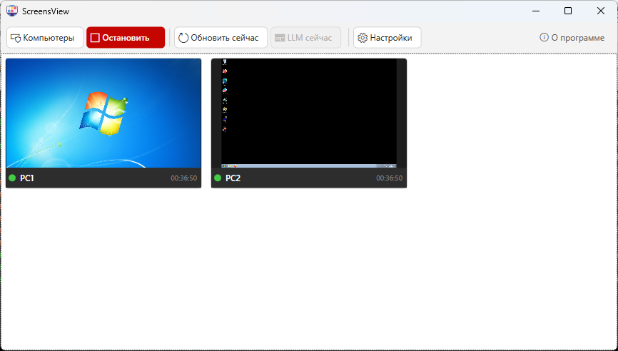

Live screen wall
Viewer collects screenshots from multiple Windows machines and keeps them visible in one wall without a separate cloud dashboard.
Local network monitoring
This site is intentionally small: use it to download the Viewer, open the repository, or jump straight to the full README guide.
If a direct Viewer .exe is not found, the button opens the latest release page.

Viewer collects screenshots from multiple Windows machines and keeps them visible in one wall without a separate cloud dashboard.
You can install and maintain the agents from Viewer itself, including modern or legacy payload selection for the target OS.
If needed, Viewer can locally compare the current screenshot with the expected screen description and flag suspicious states.